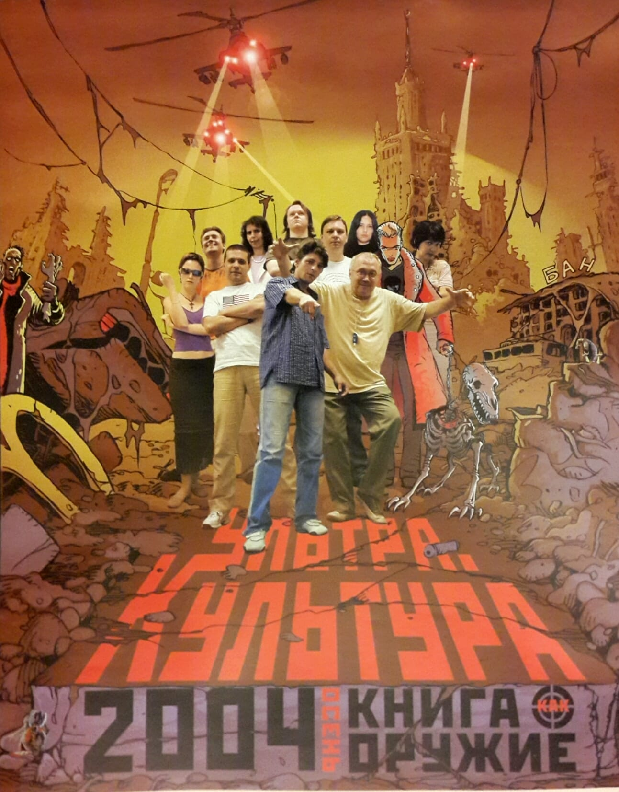

Редакция
В редакции в разное время делали и помогали делать книги разные люди. Кто-то приходил, кто-то уходил. Кто-то был «в штате», а кто-то, хоть и не был в штате — всё равно, что был. Даже не уверен, что все, кто здесь перечислен, когда-нибудь собирались в одной комнате одновременно. Не исключено, что кого-то забыл 😞
Илья Кормильцев, главный редактор
Александр Касьяненко, директор и арт-директор
Алексей Цветков, редактор
Ирина Глущенко, редактор, переводчик
Александра Финогенова, редактор, переводчик
Стас Кормильцев, редактор, переводчик
Мириам Дейчман, редактор
Владимир Харитонов, редактор
Кирилл Прокофьев, художник, дизайнер
Кирилл Иванов, дизайн, вёрстка
Константин Комардин, художник
Вера Милич, вёрстка
Алина Ключевская, Татьяна Аптулаева, PR
Женя Егорова, секретарь редакции
В 2004–2005 годах редакция выглядела примерно так:
